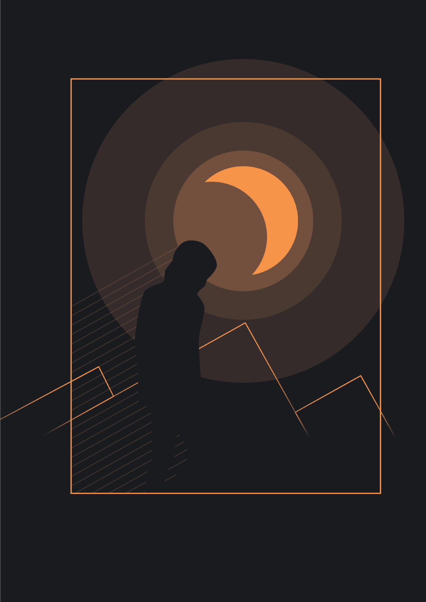
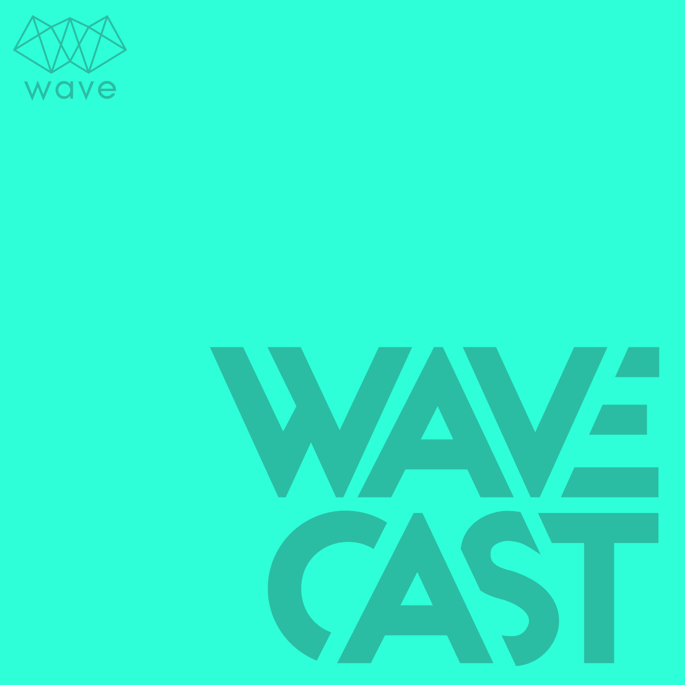
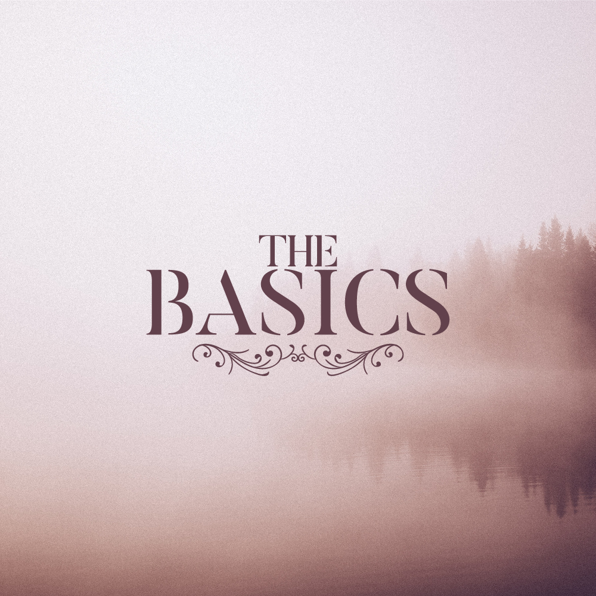

posters



Representa como ahora veía el mundo por la ventana y como me sentía después de un corazón roto en pleno aislamiento.
P.S.: Estoy bien.
(´ ω `♡) ">
Representa como ahora veía el mundo por la ventana y como me sentía después de un corazón roto en pleno aislamiento.
P.S.: Estoy bien.
(´ ω `♡) ">


logos



El podcast nunca vio la luz porque ninguno de nosotros tenía un buen micrófono.
(╥﹏╥)">
El podcast nunca vio la luz porque ninguno de nosotros tenía un buen micrófono.
(╥﹏╥)">


playlists



Género: Todo 70s, 80s y un poco de 90s.
Siempre hay esas canciones que sabes son del tiempo de tus padres o abuelos, pero nunca supiste su nombre. Esta playlist tiene todas esas canciones y muchísimas más sorpresas.">
Género: Todo 70s, 80s y un poco de 90s.
Siempre hay esas canciones que sabes son del tiempo de tus padres o abuelos, pero nunca supiste su nombre. Esta playlist tiene todas esas canciones y muchísimas más sorpresas.">